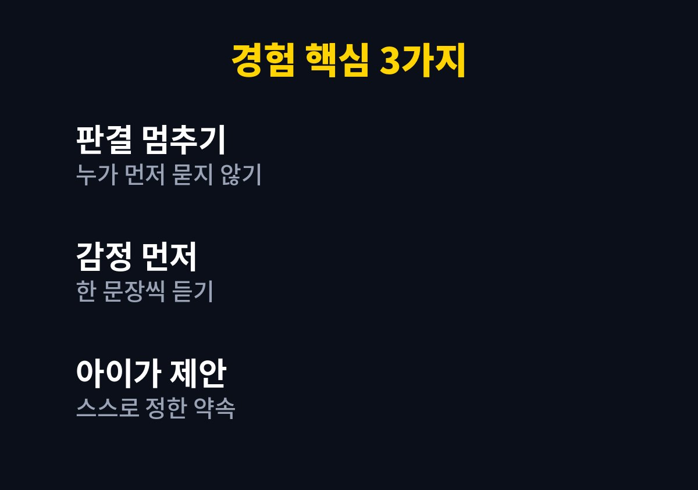
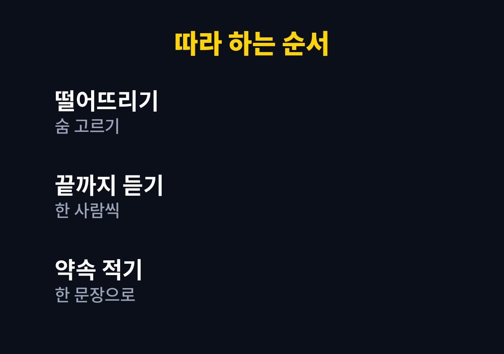

하루에도 몇 번씩 장난감과 자리를 두고 다투는 두 아이 사이에서 중재자 역할에 지친 부모라면 아래 순서대로 확인하면 된다.
일을 하다가도 방에서 울음소리가 들리면 마음부터 급해졌고 그때마다 나는 서둘러 상황을 정리하려 했다.
그 방식이 오히려 싸움을 키웠다는 것을 알게 된 과정을 적어 본다.
예전의 나는 싸움이 나면 누가 먼저 시작했는지부터 물었다.
두 아이는 서로 상대가 먼저라고 주장했고 나는 판결을 내리느라 진이 빠졌다.
어느 쪽 편을 들어도 한 아이는 억울해했다.
동생을 감싸면 형이 서운해했고 형 편을 들면 동생이 울음을 터뜨렸다.
결국 나는 중재자가 아니라 갈등의 불씨가 되어 있었다.
화가 난 목소리로 둘 다 그만하라고 하면 싸움은 잠깐 멈췄다.
하지만 서운함은 그대로 남아서 조금 뒤에 더 사소한 일로 다시 터졌다.
그런 날이면 퇴근 후의 집이 편히 쉬는 곳이 아니라 또 다른 일터처럼 느껴졌다.
며칠 동안 싸움의 이유를 기억해 보니 장난감, 자리, 부모의 관심이 거의 전부였다.
물건 자체보다 내가 더 소중하게 대접받고 싶다는 마음이 숨어 있는 경우가 많았다.
그래서 장난감을 하나 더 사 준다고 해서 싸움이 끝나지는 않았다.
나는 문제를 빨리 없애고 싶은 마음에 해결책을 먼저 던지고 있었다.
아이들은 자기 감정을 말할 기회를 얻지 못한 채 결론만 받아들여야 했다.
그러니 억울한 마음이 풀리지 않는 것도 당연한 일이었다.

싸움이 나면 먼저 두 아이를 떨어뜨려 숨을 고르게 하고 각자 속상했던 점을 한 문장씩 듣는다.
내가 할 일은 맞고 틀림을 정하는 것이 아니라 말이 끝날 때까지 끊지 않고 들어 주는 것이었다.
아이가 말하는 동안 나는 고개를 끄덕이며 속상했겠다고 한마디만 보탰다.
서로의 이야기를 들은 뒤에는 어떻게 하면 둘 다 괜찮을지 아이들에게 물었다.
순서를 정하거나 번갈아 쓰자는 의견이 아이들 입에서 나왔고 스스로 정한 약속은 훨씬 오래 지켜졌다.
내가 정해 준 규칙은 금방 잊혔지만 자기들이 낸 의견은 서로 상기시켜 주기까지 했다.
| 구분 | 예전 방식 | 바꾼 방식 |
|---|---|---|
| 첫 마디 | 누가 먼저 했는지 묻기 | 각자 속상한 점 묻기 |
| 내 역할 | 판결을 내리는 사람 | 끝까지 듣는 사람 |
| 해결 | 아빠가 결론을 정함 | 아이들이 방법을 제안함 |
결국 바뀐 것은 아이들이 아니라 싸움을 대하는 내 태도였다.
지금도 아이들은 다투고 나도 가끔 목소리가 커진다.
다만 싸움이 길게 이어지는 일은 줄었고 화해하는 속도가 빨라졌다.
아이들이 나를 부르기 전에 스스로 해결해 보려는 모습도 가끔 보였다.
때리거나 물건을 던지는 등 다칠 위험이 있을 때는 대화보다 먼저 행동을 멈추게 했다.
대화는 모두 진정된 뒤에 시작했고 아이의 공격적인 행동이 반복되어 걱정된다면 소아청소년과나 상담 기관의 도움을 받는 것이 좋다.
모든 싸움이 이 방식으로 풀리지는 않았고 피곤한 날에는 나도 예전 습관이 튀어나왔다.

1. 먼저 두 아이를 안전하게 떨어뜨려 숨을 고를 시간을 준다.
2. 누가 먼저인지 묻지 않고 속상했던 점을 한 사람씩 듣는다.
3. 들은 내용을 내 말로 짧게 되풀이해 준다.
4. 둘 다 괜찮을 방법을 아이들에게 먼저 물어본다.
5. 정한 약속을 한 문장으로 적어 두고 다음 싸움에서 함께 확인한다.
형제 싸움을 없애는 방법을 찾기보다 싸움을 다루는 방식을 바꾸는 쪽이 현실적이었다.
아이들이 스스로 화해하는 경험이 쌓이면 부모의 중재도 조금씩 줄어든다고 느꼈다.
그 사이 나도 소리를 지르기 전에 한 번 숨을 고르는 습관이 생겼다.
오늘 한 번만 판결 대신 경청으로 시작해 보기를 권한다.
※ 2026년 기준 개인 육아 경험을 바탕으로 정리한 일반 정보이며, 아이의 발달이나 건강에 걱정이 있다면 소아청소년과 등 전문가와 상담하시길 바란다.